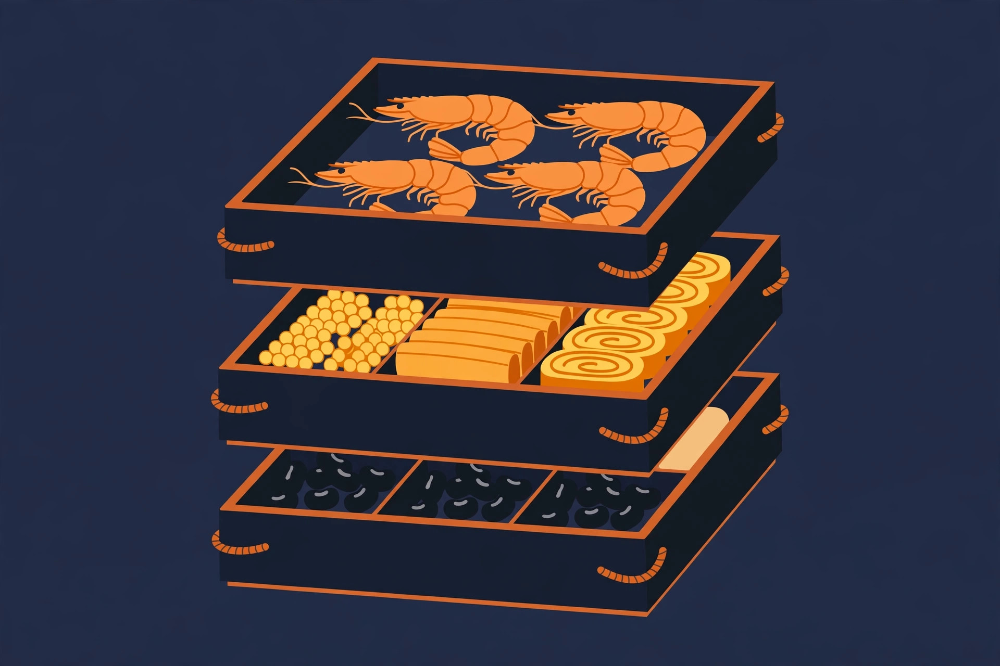
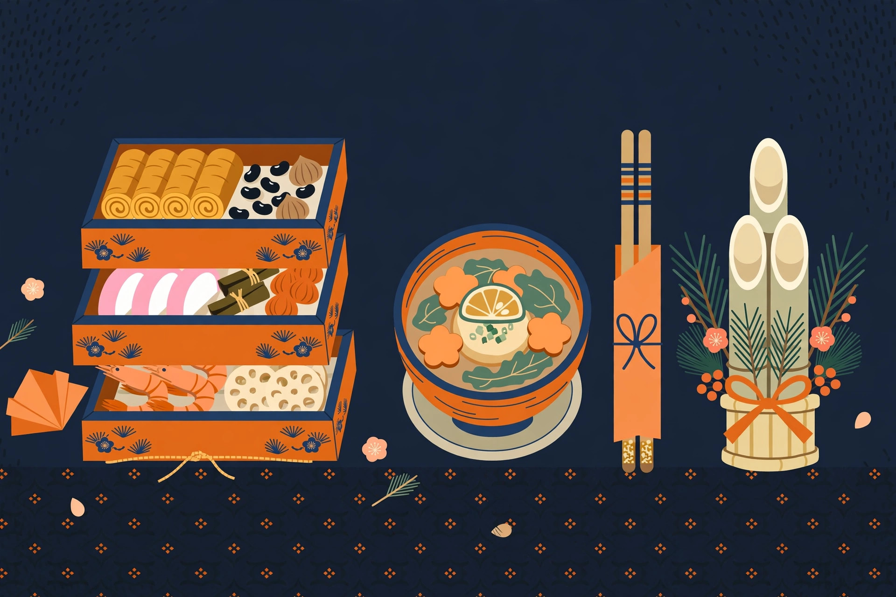
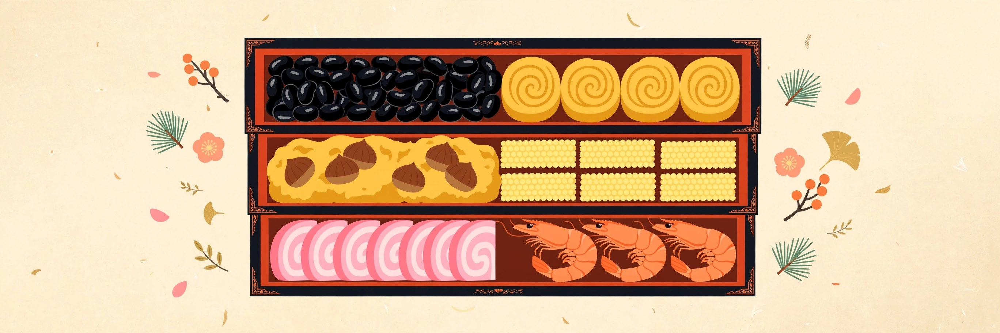

おせちのカイカタ
決めるのは「早割の締め切り」と「解凍の段取り」。人数と、冷凍か冷蔵かで迷わない

1. 早割と締め切りの流れ
| 日 | 月 | 火 | 水 | 木 | 金 | 土 |
|---|---|---|---|---|---|---|
| 1 | 2 | 3 | 4 | 5 | ||
| 6 | 7 | 8 | 9 | 10久松の早割終了 | 11 | 12 |
| 13 | 14 | 15 | 16 | 17 | 18 | 19 |
| 20 | 21 | 22 | 23 | 24 | 25 | 26 |
| 27 | 28 | 29 | 30到着の目安 | 31解凍 |
| 時期 | 何が起きるか |
|---|---|
| 〜11月 | 早割が最も手厚い時期。人気の品はこの時期に完売することもある |
| 12月上旬 | 早割の終了ラッシュ（例：博多久松は12月10日まで早割と案内） |
| 12月中旬〜 | 残り在庫の勝負。選べる品数と到着日が限られてくる |
| 12月29〜31日 | お届け本番。冷凍は解凍の時間を逆算して受け取る |

「安く買う」より先に「売り切れで買えない」を避けるのが、おせちの買い方です。特に初めての店は、早割のうちに決めてしまう方が結果的に満足度が高くなります。
2. 選び方：人数・段数・冷凍か冷蔵か
おせち選びで失敗するのは、だいたい2つだけです。人数の読み違い（多すぎて残る／少なすぎて寂しい）と、到着してから冷凍庫・冷蔵庫に入らないこと。味の好みより先に、この2つを潰しておくと失敗しません。
人数と段数の目安
| 食べる人数 | おすすめの形 | 品数の目安 |
|---|---|---|
| 1〜2人 | 個食セット・一段〜二段重 | 15〜34品 |
| 3〜4人 | 三段重 | 34〜49品 |
| 5人前後〜 | 特大三段重・品数多めの二段重 | 39〜55品 |
おせちは「少しずつ、つまむ」料理なので、人数ぴったりか、少し少なめでも足りることが多いです。子どもは大人の半分くらいで計算を。お雑煮やお餅、お酒のつまみが別にある年は、一段小さくても困りません。
三段重の中身は、段ごとに役割が決まっています

一の重は甘い祝い肴、二の重は焼き物・酢の物、三の重は煮物、というのが基本の形です。和洋中タイプは二の重・三の重に洋風・中華が入ります。「和風がいいか、和洋中がいいか」は、家族の好き嫌い（とくに子どもとお酒のつまみ需要）で決めるのが実用的です。
注文前に潰しておく4つの確認
冷凍は解凍に1日かかるので、元日に食べるなら12月30日着が基本線。29日着なら余裕を持てます
特大三段重は約26cm四方。到着前に棚を測って、入る場所を空けておく
早割は「安さ」より「完売回避」のため。売れ筋は11月中にも完売が出ます
数の子・海老・昆布巻など、定番の顔ぶれは品ごとに違います。家族の苦手が多い年は品目の内訳を確認
3. 選んだもの（12品）
Amazonで売れ筋に入っているもの、レビュー件数の多い定番を中心に12品。人数とタイプで絞れます。価格は載せていないので、リンク先で確認してください（このサイトの方針です）。
「一人一重」のミニおせち（1個15品）が2個入った個食セット。和洋風・冷凍・12月30日着。実家に帰らない一人暮らしや、夫婦で別々に楽しみたいときに。
こんな人に：一人暮らし・少人数の正月
Amazonで見る12月30日着（リンク先で最新情報をご確認ください）
博多の老舗・久松の味を、まず小さく試せる入門枠。通販おせちが初めてで、いきなり三段重は不安な人へ。久松の早割は12月10日までと案内されています。
こんな人に：通販おせちが初めての人
Amazonで見る早割は12月10日まで（リンク先で最新情報をご確認ください）
約2〜3人前・全46品の三段重。和風・洋風・中華が入る和洋中タイプで、冷凍・12月29日〜31日お届け。少人数でも品数をたっぷり楽しみたい年向け。
こんな人に：少人数で品数重視の人
Amazonで見る12月29〜31日お届け（リンク先で最新情報をご確認ください）
2〜3人前・34品の三段重。京都の京菜味のむらの京風おせちで、冷凍・12月30日お届け。百貨店品質の薄味・上品な方向を少人数で。
こんな人に：少人数で京風・上品に
Amazonで見る12月30日お届け（リンク先で最新情報をご確認ください）
3人前・34品の三段重（和洋風・冷凍・12月30日着）。レビュー★4.1・2,500件超の売れ筋で、豚バラ黒糖角煮やチーズオードブルなど洋風も入る、家族3人の標準形。
こんな人に：家族3人の標準形に
Amazonで見る12月30日着（リンク先で最新情報をご確認ください）
3人前・37品の三段重（和洋風・冷凍・12月30日着）。福良鮑・海鮮おこわ・豚角煮の豪華な別添品が付く、板前魂の定番ど真ん中。
こんな人に：3人前で別添品も豪華に
Amazonで見る12月30日着（リンク先で最新情報をご確認ください）
3〜4人前・49品の三段重（冷凍）。京都の料亭の京風おせちで、品数の多さが魅力。和風に寄せて、落ち着いた正月にしたい年へ。
こんな人に：京風・和風で落ち着いて
Amazonで見る盛り付け済み（リンク先で最新情報をご確認ください）
約3人前・35品の6寸三段重。こちらは冷蔵・解凍不要・盛り付け済みで、そのまま食卓に出せるタイプ。解凍の段取りをしたくない年の本命。
こんな人に：解凍の手間をなくしたい人
Amazonで見る冷蔵・解凍不要（リンク先で最新情報をご確認ください）
4〜5人前・55品の二段重（和洋中・冷凍・12月30日着）。Amazonのおせち売れ筋3位。あわび・ローストビーフ・豚角煮・海鮮おこわ・年越しそばまで付く、品数で圧倒する一品。
こんな人に：大人数で品数たっぷりに
Amazonで見る12月30日着（リンク先で最新情報をご確認ください）
5人前・43品の特大8.5寸三段重（和洋風・冷凍・12月30日着）。おせち売れ筋4位で、特製の雑煮出汁まで付く、板前魂の顔。祝いえび・数の子など縁起物も王道の顔ぶれ。
こんな人に：5人家族の王道に
Amazonで見る12月30日着（リンク先で最新情報をご確認ください）
5人前・39品の三段重（和・洋・中・冷凍・12月30日着）。エビチリや酢豚まで入る和洋中で、総重量約3.9kgのボリューム型。味の幅で飽きさせない構成。
こんな人に：和洋中を幅広く楽しみたい人
Amazonで見る12月30日着（リンク先で最新情報をご確認ください）
5人前・43品の三段重（和洋風・冷凍・12月30日着）。煮あわび・ローストビーフ・オマール海老入りの豪華枠で、レビュー★4.1・1,000件超。一年に一度の贅沢枠。
こんな人に：一年に一度の贅沢に
Amazonで見る12月30日着（リンク先で最新情報をご確認ください）
少人数の年は「個食セット」という形もあります（小桜パーティーのような一人一重）。逆に大人数なら、大きな一重より品数の多い二段重・三段重のほうが、つまみの幅が出ます。
4. 冷凍と冷蔵の違い、解凍の段取り
| 冷凍おせち | 冷蔵おせち | |
|---|---|---|
| 届き方 | 冷凍のまま到着 | 盛り付け済み、そのまま食べられる |
| 段取り | 冷蔵庫で1日〜1日半の解凍が必要 | 解凍いらず。到着日を食べる日に合わせる |
| 向いている人 | 到着日を早めに受け取りたい人 | 段取りを最小にしたい人 |
冷蔵庫の棚の高さと、お重のサイズ（大きなものは8寸＝約24cm四方）を先に測っておくと、到着してから慌てません。冷凍のクリスマスケーキを先に買って待たせる年は、冷凍庫の空きが競合します。クリスマスケーキの特集の段取りと合わせて、空きを確認してください。
解凍時間の目安（冷蔵庫で解凍する場合）
| 大きさ | 目安 | 逆算すると |
|---|---|---|
| 一段重・小さい二段重 | 12時間前後 | 元日に食べるなら31日の朝に冷蔵庫へ |
| 二段重・三段重 | 18〜24時間 | 30日到着後すぐ冷蔵庫へ |
| 特大の三段重（8.5寸クラス） | 24〜30時間 | 29日到着が安心。30日着なら届いて即・冷蔵庫 |
| 冷蔵タイプ | 解凍不要 | 到着日＝食べる日に合わせる |
※一般的な目安です。品ごとの指定がある場合は、その案内を優先してください。
5. よくある質問
Q. 何人前を選べばいいですか？
Q. 早割はいつまでですか？
Q. 解凍に失敗しないコツは？
Q. 冷凍庫（冷蔵庫）に入るか心配です
Q. 贈り物として直接送れますか？
関連する特集
Amazonのセールは、仕組みと順番を知らないと損をする。その「歩き方」を特集で案内しています。日々の値動きは価格の流れを確認してから、本当に安いものだけをXで速報しています。
Xで速報を受け取る（@A_KAIKATA）
Amazonのアソシエイトとして、カイカタは適格販売により収入を得ています。
このサイトについて｜プライバシーポリシー